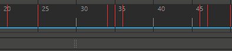

“播放控件”是一组播放动画和遍历动画的按钮。播放范围显示在“时间滑块”(Time Slider)中。
-
单击转到开头按钮转到播放范围的起点。
-

单击“后退帧”(Step Back Frame)按钮后退一帧。默认热键：Alt + ,（逗号）键（用于 Windows 和 Linux）；Option + ,（逗号）键（用于 MacOS）。Linux 用户应确定其 Alt 键功能是否已与 Super 键切换，以便理解本主题中的此热键指令和其他热键指令。
-
单击后退关键帧按钮后退一个关键帧。默认热键：,（逗号）键。
提示： 仅当选择了已设置关键帧的对象，且关键帧显示在“时间滑块”(Time Slider)中时，此按钮才可用。 -
单击向后播放按钮以反向播放。按 Esc 键停止播放。
-
单击向前播放按钮以正向播放。默认热键：Alt + V（用于 Windows 和 Linux）；Option + V（用于 MacOS）。按 Esc 键停止播放。
-
单击前进关键帧按钮前进一个关键帧。默认热键：.（句点）键。仅当选择了已设置关键帧的对象，且关键帧显示在“时间滑块”(Time Slider)中时，此按钮才可用。
-
提示： 使用“时间滑块”(Time Slider)首选项中的“在步进关键帧时循环播放范围”(Loop Play Range while stepping keyframes)选项，将区域限制在范围滑块(Range Slider)中定义的帧范围内。
-
单击“前进帧”(Step Forward Frame)按钮前进一帧。默认热键：Alt + .（句点）键（用于 Windows 和 Linux）；Option + .（句点）键（用于 MacOS）。
-
提示： 使用“时间滑块”(Time Slider)首选项中的“在步进帧时循环播放范围”(Loop Play Range while stepping frames)选项，将区域限制在范围滑块(Range Slider)中定义的帧范围内。
-
单击转到结尾按钮转到播放范围的结尾。
-
单击停止按钮停止播放。此按钮仅在播放动画时显示，用于替换向前播放或向后播放按钮。默认热键：Esc 键。